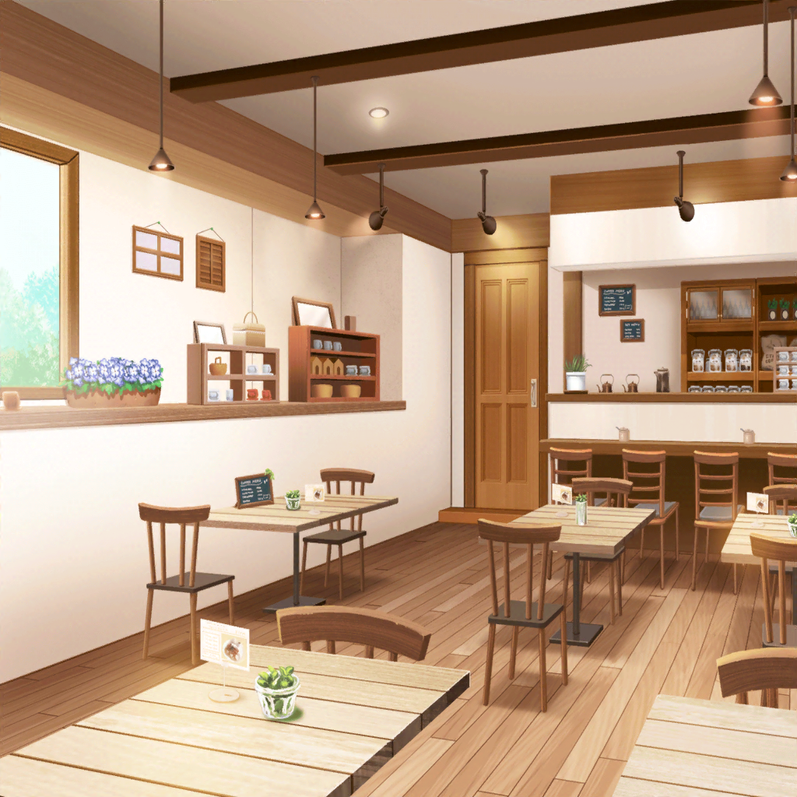

羽沢珈琲店
つぐみ
いらっしゃいませ～！
つぐみ
あ、{{userName}}さん！
今日はお休みなんですか？
つぐみ
いえ、{{userName}}さんがこの時間に来るのが
珍しかったので、お休みなのかな？ って……
つぐみ
そっか、お仕事の休憩中なんですね。
お疲れさまです！
どうぞ、ゆっくりしていってくださいね
つぐみ
ご注文は何にしますか？
つぐみ
はい……はい……コーヒーですね。
わかりました！
つぐみ
あ、コーヒーとご一緒にクッキーはいかがですか？
つぐみ
今日のクッキーは
お母さんが焼いたものではないんですよ
つぐみ
ふふ、お父さんでもないです。
実は、私が焼いたんですよ！
つぐみ
この間、お菓子教室を手伝ったんですけど
その時、改めてクッキー作りを練習しようと思って
作ってみたんです
つぐみ
はい、お菓子教室です
つぐみ
このお店を使って、
たくさんの生徒さんと一緒に
クッキーを作ったんです！
つぐみ
その生徒さんの中には、紗夜さんもいたんですよ！
つぐみ
やっぱりビックリしますよね。
私も初め見た時はビックリしました。
それにどう話せばいいんだろうって……
つぐみ
でも、一緒にクッキーを作っているうちに
だんだん親近感が湧いてきて、
最後には仲良くなれたんです♪
つぐみ
紗夜さんの様子ですか？
つぐみ
最初は、イメージ通りでしたよ。
几帳面で、とても真面目で……
つぐみ
生地の厚さを測るために
定規を貸してほしいって、言われちゃって……
つぐみ
そんなことを言われたのは初めてだったので
私、ビックリしちゃいました
つぐみ
でも、紗夜さんのそういう所が
とても魅力的だと思うんです
つぐみ
自分がやるべきことはきっちりやる……
そういう姿勢が私にはとても素敵に思えて……
つぐみ
それに真面目なだけじゃなくて、
いっぱいかわいいところもあって！
ふふ、紗夜さんの良いところをたくさん見ることができました！
つぐみ
……そういえば、
紗夜さんも私にも良いところがたくさんあるって
言ってくれたんですよ！
つぐみ
はい。
私、今まで自分には良いところがないと
思っていたんですけど……
つぐみ
私は、人の良いところを見つけるのが
上手みたいです
つぐみ
自覚はないんですけどね……
つぐみ
でも、自分の良いところって
自分ではわからないことが多いと思うんです
つぐみ
だから……
自分では気づいていない自分の良さって
本当はたくさんあるのかもしれませんね
つぐみ
私、自分から積極的に外に出ていくというよりは
仲がいい人達と一緒にいる方が落ち着くんですけど……
つぐみ
紗夜さんっていう新しい友達ができて……
つぐみ
そのおかげで見つかるものもあるんだなって
初めて知ることができました！
つぐみ
自分が知らなかった一面を
友達を通して知ることができるって
とても素敵だと思いませんか？
つぐみ
ですよね！
{{userName}}さんも同じ意見で嬉しいです！
つぐみ
なので、これからは
積極的に話したことがない人と
関わっていけたらいいなって思うんです
つぐみ
そうすれば、
私が知らない私を知ることもできますし
つぐみ
何より、新しく知り合った人の
いいところが発見できますしね！
つぐみ
……って、話し込んじゃって
ごめんなさい！
つぐみ
すぐにコーヒーをお持ちしますね！
つぐみ
……っとと。
はい、どうかしましたか？
つぐみ
……え？
クッキーもご注文ですか？
つぐみ
さっきの話を聞いていたら
食べたくなった……ですか？
つぐみ
わかりました！
つぐみ
{{userName}}さんの良いところは
優しいところですね。
ありがとうございます！
つぐみ
今日のは自信作なので
楽しみにしていてくださいね！
もちろん私からのサービスです！